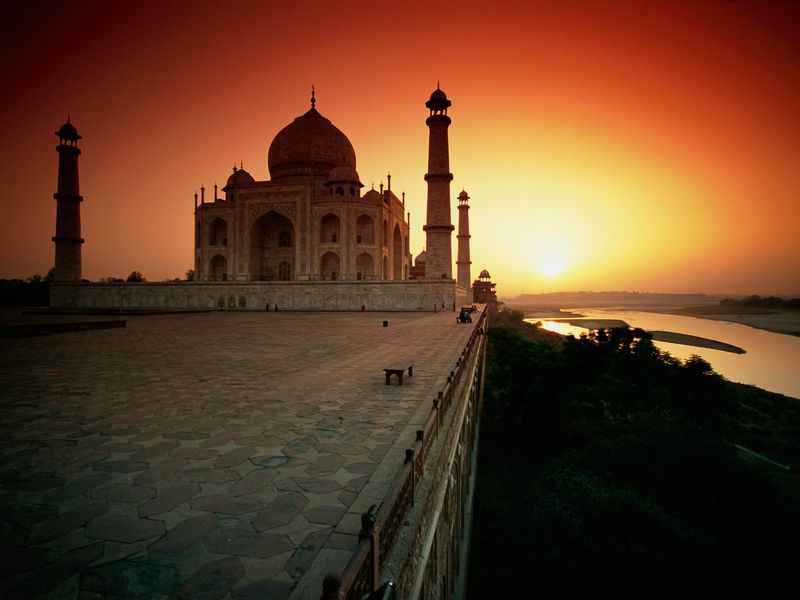
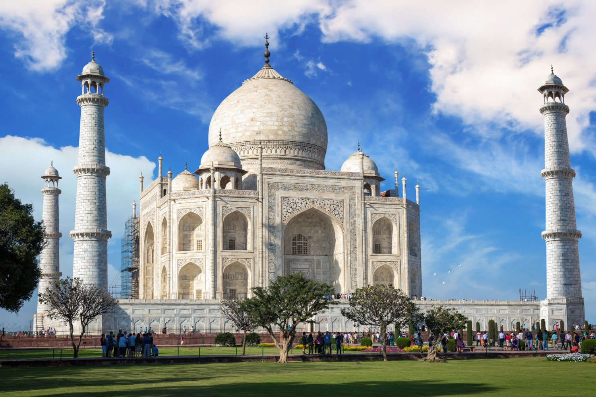
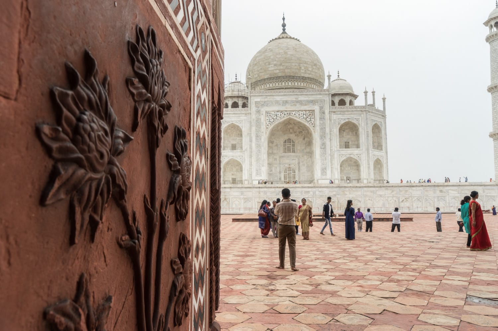
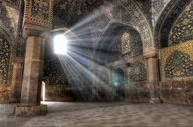
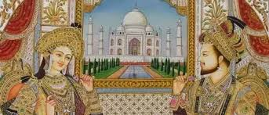
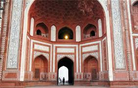
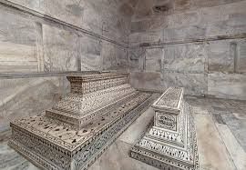
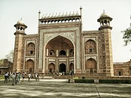
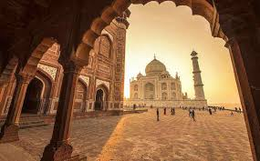
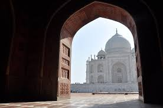
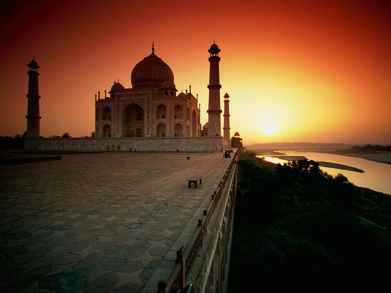
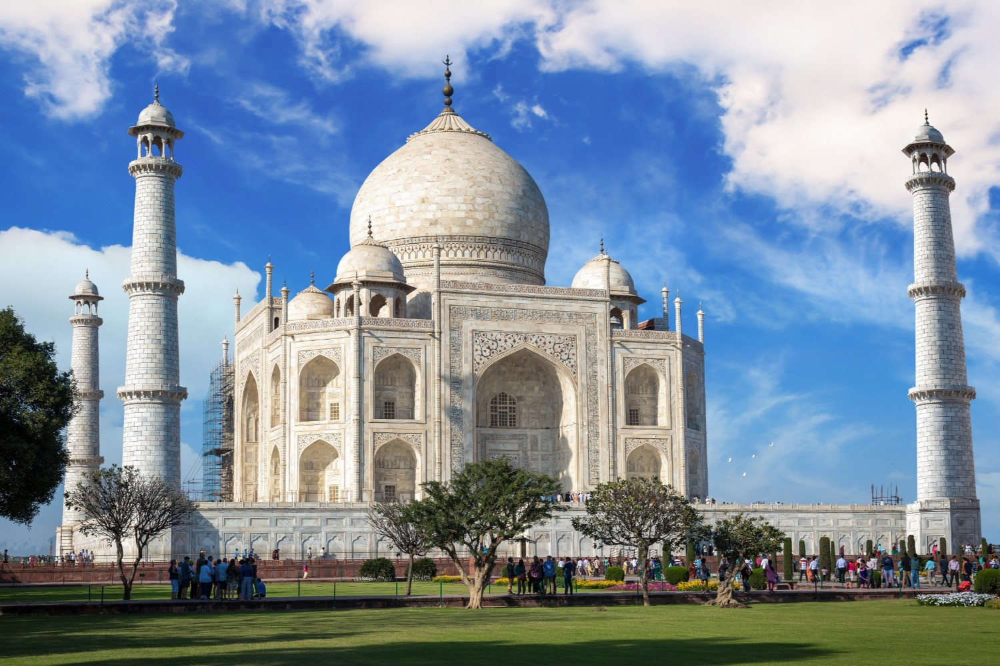
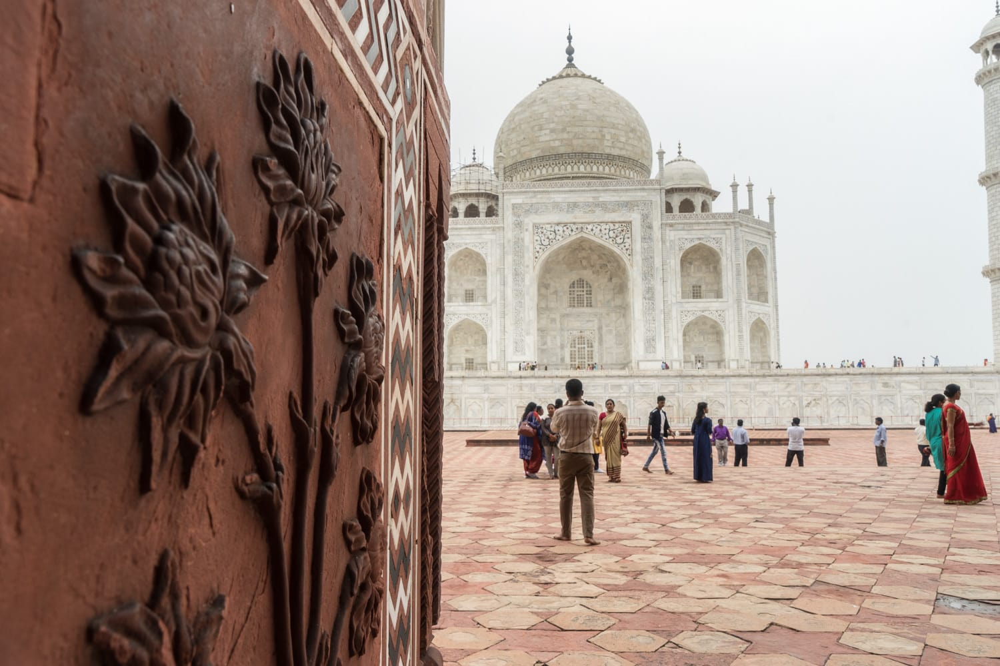
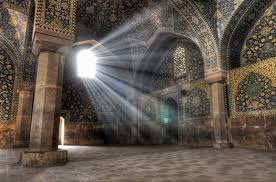
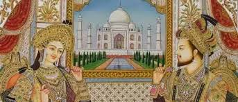
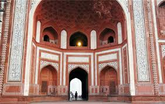
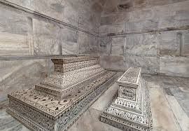
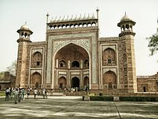
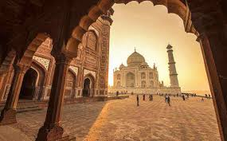
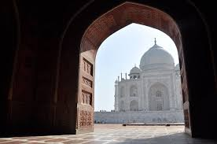
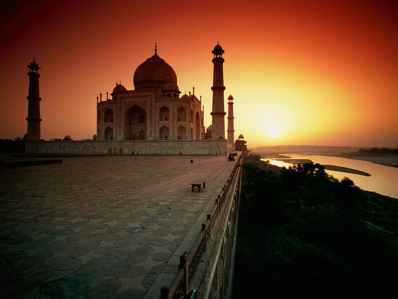
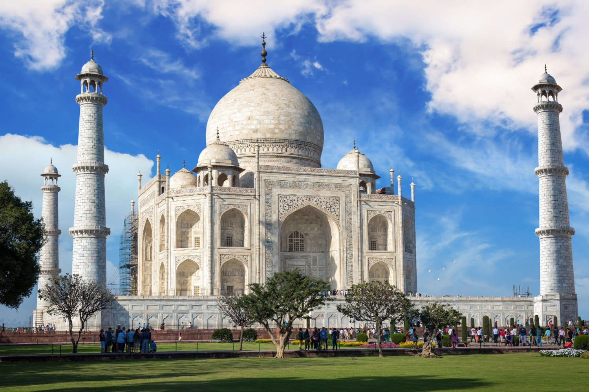
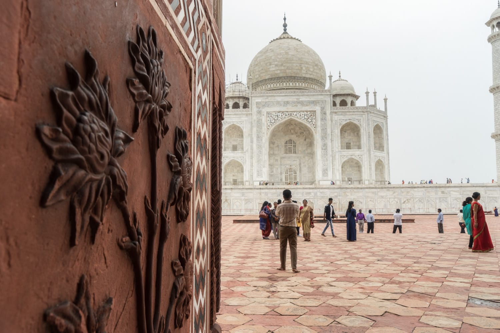
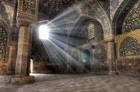
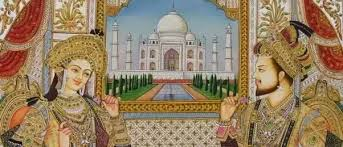
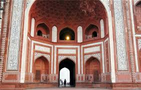
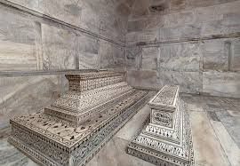
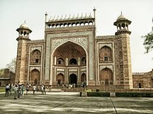
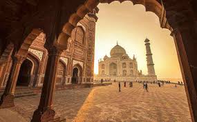
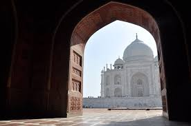
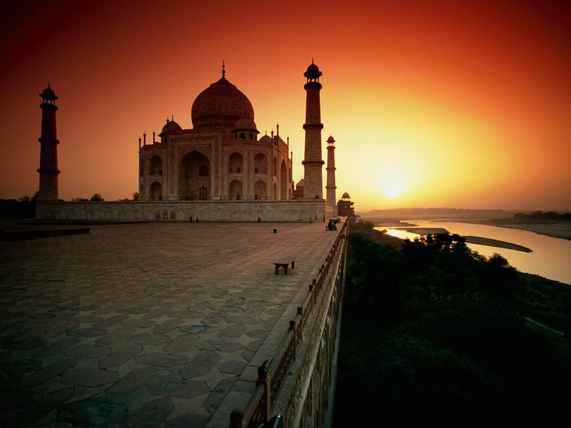
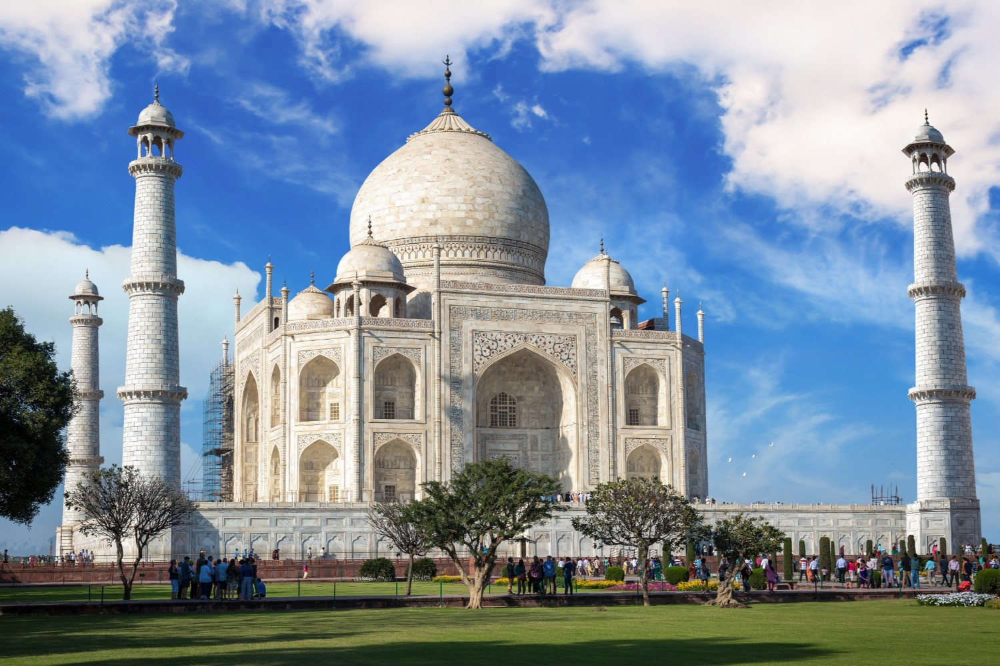
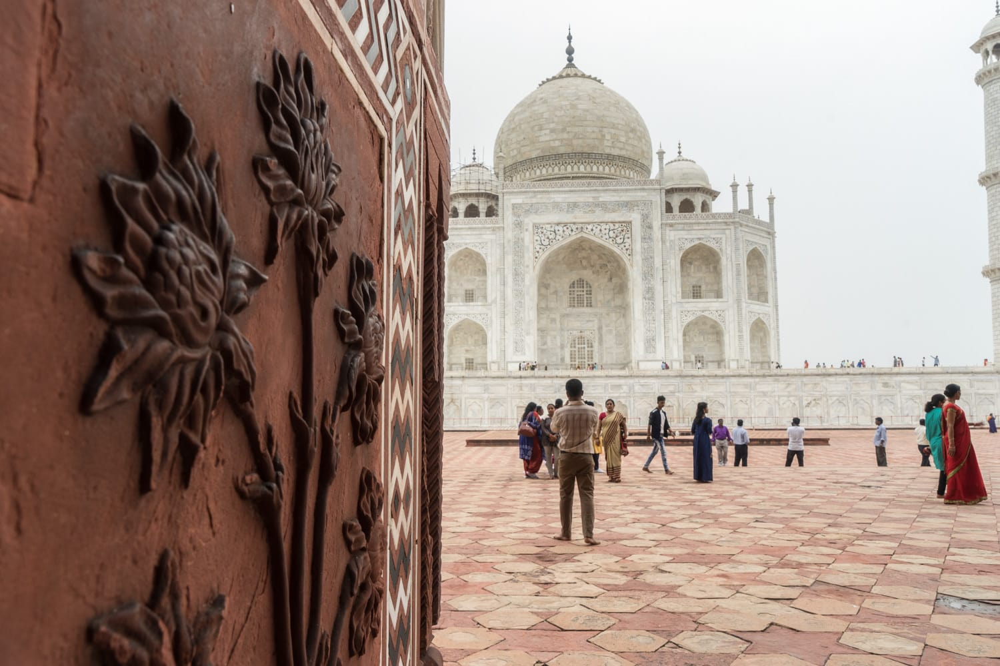
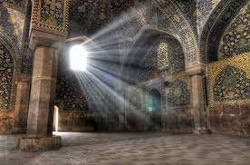
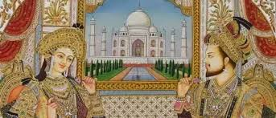
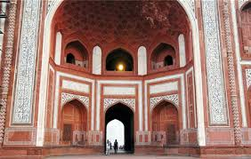
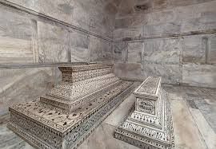
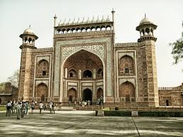
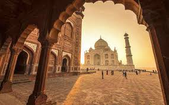
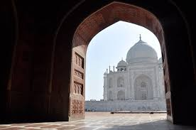
Shah Jahan, at first named Prince Khurram, was conceived in the year 1592. He was the child of Jehangir, the fourth Mughal ruler of India and the grandson of Akbar the Great. In 1607 while walking around the Meena Bazaar, joined by a string of groveling subjects, Shah Jahan got a look at a young lady peddling silk and glass dabs. It was all consuming, instant adoration and the young lady was Mumtaz Mahal, who was known as Arjumand Banu Begum around then. Around then, he was 14 years of age and she, a Muslim Persian princess, was 15. In the wake of meeting her, Shah Jahan returned to his dad and announced that he needed to wed her. The match got solemnized following five years i.e., in the year 1612.
It was in the year 1628 that Shah Jahan turned into the Emperor and endowed Arjumand Banu with the imperial seal. He likewise presented her with the title of Mumtaz Mahal, which means the "Gem of the Palace". In spite of the fact that Shah Jahan had different spouses additionally, at the same time, Mumtaz Mahal was his most loved and went with him all over the place, even on military crusades. In the year 1631, when Mumtaz Mahal was bringing forth their fourteenth tyke, she passed on because of certain entanglements. While Mumtaz was on her deathbed, Shah Jahan guaranteed her that he could never remarry and will fabricate the most extravagant catacomb over her grave.
It is said that Shah Jahan was so grief stricken after her demise that he requested the court into grieving for a long time. At some point after her demise, Shah Jahan embraced the errand of raising the world's most delightful landmark in the memory of his dearest. It took 22 years and the work of 22,000 laborers to develop the landmark. At the point when Shah Jahan kicked the bucket in 1666, his body was put in a tomb alongside the tomb of Mumtaz Mahal. This eminent landmark came to be known as "Taj Mahal" and now tallies among the Seven Wonders of the World. This is the genuine story of the Taj Mahal of India, which has hypnotized numerous individuals with its entrancing magnificence.